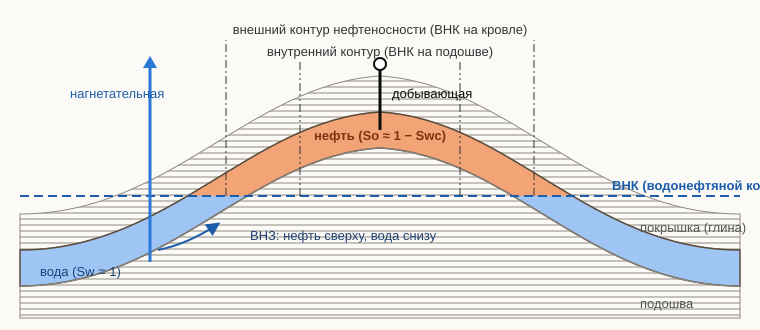
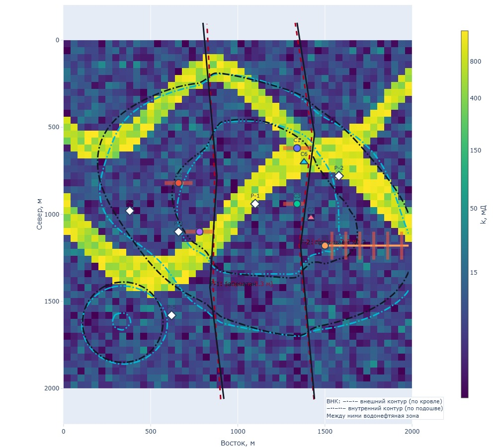
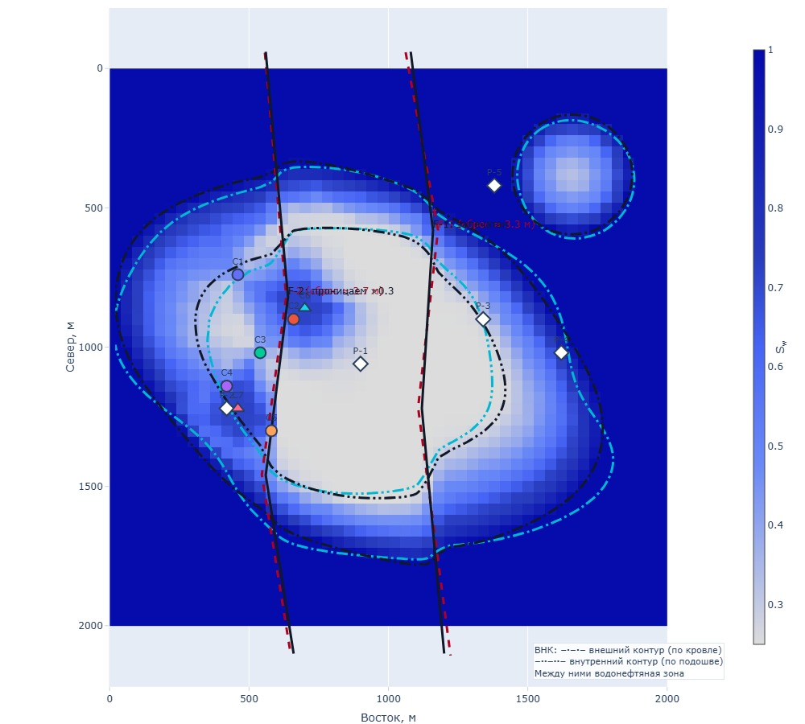

1 Месторождение и его разработка с нуля
Прежде чем бурить в игре, договоримся о словах. В этой главе – минимум геологии и разработки, без которого игра превращается в лотерею: что такое залежь, откуда берутся запасы, почему падает давление и зачем закачивать воду.
1.1 Залежь: ловушка, коллектор, флюиды
Нефть легче воды и всплывает по пористым породам, пока не упрётся в непроницаемую покрышку (глины). Если слой изогнут куполом – антиклиналью, – нефть скапливается в его своде: это ловушка. Пористая проницаемая порода, в которой лежит нефть, – коллектор (пласт). Ниже нефти в том же пласте – вода; граница между ними – водонефтяной контакт (ВНК).

На карте залежь ограничена двумя линиями:
- внешний контур нефтеносности – где ВНК пересекает кровлю пласта: дальше от свода в пласте уже только вода;
- внутренний контур – где ВНК пересекает подошву: внутри него пласт нефтенасыщен на всю толщину.
Между контурами – водонефтяная зона (ВНЗ): сверху нефть, снизу вода. Скважина в ВНЗ с первого дня даёт нефть с водой. В игре оба контура рисуются на карте после того, как вы введёте свою оценку ВНК и купите сейсмику (Глава 6).
Все объекты игры устроены так: купол с сателлитом (маленьким куполом рядом), разрезанный разломами. У канонических объектов (сид 0) – одна и та же структура, отражённая зеркально и опущенная на свою глубину; объекты по сиду генерируются случайно в диапазонах группы.
1.2 Свойства коллектора
| Величина | Обозначение | Единица в игре | Что означает |
|---|---|---|---|
| пористость | \varphi | доли | доля объёма породы, занятая порами (0,16–0,23) |
| проницаемость | k | мД (миллидарси) | насколько легко порода пропускает жидкость; от 0,01 мД (ачимовка) до 2000 мД (русла бобриковского) |
| эффективная толщина | h | м | суммарная толщина проницаемых прослоев (7–15 м) |
| водонасыщенность | S_w | доли | доля пор, занятая водой; нефтенасыщенность S_o = 1-S_w |
| связанная вода | S_{wc} | доли | вода, которая не течёт никогда; в нефтяной части S_w=S_{wc} |
| остаточная нефть | S_{or} | доли | нефть, которую вода вытеснить не может |
| вязкость нефти / воды | \mu_o,\ \mu_w | сП | сопротивление течению; вода ≈ 0,4–1,1 сП, нефть 0,7–22 сП |
Проницаемость в природе распределена логнормально: в одном пласте встречаются прослои по 5 и по 500 мД. В игре у каждого объекта логнормальный фон проницаемости, а у ЮК10–11 и бобриковского – ещё и высокопроницаемые русла.

1.3 Запасы нефти
Начальные геологические запасы (OOIP, original oil in place) – это объём нефти в порах:
\text{OOIP}=\sum_{\text{ячейки}} V_p\,(1-S_{w0}),\qquad V_p=\Delta^2\,h\,\varphi .
Пласт в игре двумерный, поэтому разрез в каждой точке усредняется по вертикали. Если нефтенасыщенная толщина в точке h_н, а полная h, то доля нефтяной части f_o=h_н/h и начальная водонасыщенность ячейки
S_{w0}=f_o\,S_{wc}+(1-f_o)\cdot 1 .
Ниже – настоящая структура учебного купола из ядра игры. Двигайте ВНК и смотрите, как меняются площадь нефтеносности и запасы: именно поэтому ошибка в ВНК на пару метров – это ошибка в запасах на десятки процентов.
Код: нефтенасыщенная толщина по разрезу каждой ячейки
dome = neft.field({ scenario: "base" })
domeOil = {
const r = dome.r, n = r.nx, hOil = new Float64Array(n * n);
let area = 0, ooip = 0;
for (let j = 0; j < n; j++) for (let i = 0; i < n; i++) {
const c = j * n + i, col = core.l2Column(i, j, r.scen, 1); // разрез: пачки песчаника и глин
hOil[c] = core.l2OilNet(col, owc); // нефть – в песчанике выше ВНК
const fo = Math.min(1, hOil[c] / (r.h * r.thick[c])), Sw0 = fo * r.Swc + (1 - fo);
if (hOil[c] > 0) area += r.dx * r.dx;
ooip += r.poreVol[c] * (1 - Sw0);
}
return { hOil, area, ooip };
}Истинный ВНК учебного купола – абс. −2420 м. Обратите внимание на разломы (красный пунктир): блок за разломом может иметь кровлю выше или ниже на 3–4 м (сброс), поэтому контур нефтеносности на разломе «ломается».
1.4 Пластовое давление и энергия пласта
Жидкость в пласте сжата весом вышележащих пород и воды. Начальное пластовое давление обычно близко к гидростатическому: около 0,1 атм на метр глубины. В игре P_0 = \text{градиент}\times\text{глубина} (у ачимовки – аномально высокое, 0,116 атм/м).
Почему нефть вообще течёт к скважине? Потому что давление в скважине (забойное, P_{wf}) ниже пластового, а жидкость течёт от высокого давления к низкому (закон Дарси, Глава 2). Откуда пласт берёт энергию, чтобы «выталкивать» нефть?
- Упругий режим. Порода и жидкость чуть-чуть сжимаемы (c_t\approx10^{-4} 1/атм). Отобрали объём \Delta V – давление упало на \Delta P=\Delta V/(V_p c_t). Запас этой энергии мал: из пласта можно упруго отобрать порядка 1–2 % запасов, и давление упадёт на сотню атмосфер.
- Водонапорный режим. Если в пласт закачивать воду – поддержание пластового давления (ППД), – давление держится, а вода ещё и вытесняет нефть к добывающим. Это основной способ разработки в Западной Сибири и в игре.
Важное уведомлениеГлавное правило игры
Без закачки давление за год-два падает, дебиты падают вместе с ним, фонтан глохнет, насосы работают на пределе. Разработка в игре – это система добывающих и нагнетательных скважин, а не набор отдельных скважин.
1.5 Системы разработки
Скважины расставляют не как попало, а сеткой – по системе. Основные системы, которые перебирает и эталон игры:
| Система | Как устроена | Когда хороша |
|---|---|---|
| рядная | ряды добывающих, между ними ряды нагнетательных | вытянутые залежи, высокая проницаемость |
| пятиточечная (шахматная) | каждая нагнетательная окружена четырьмя добывающими и наоборот, 1 : 1 | средняя и низкая проницаемость, нужно много закачки |
| «две добывающие на одну нагнетательную» | обращённая семиточечная, 2 : 1 | высокая проницаемость, вязкая нефть |
Расстояние между скважинами (плотность сетки) – главный экономический выбор: густая сетка быстрее и полнее отбирает нефть, но каждая скважина стоит 40–95 млн руб. Эталон игры для БВ8, например, обходится тремя скважинами, а для ЮК10–11 – четырнадцатью.
1.6 Коэффициент извлечения нефти (КИН)
Не вся нефть будет добыта. КИН – доля запасов, которую удалось извлечь:
\text{КИН}=\frac{Q_{н,\text{накоп}}}{\text{OOIP}}=K_{выт}\cdot K_{охв}.
- Коэффициент вытеснения K_{выт} – какую долю нефти вода вымывает там, где прошла. Даже идеальная промывка оставляет S_{or}, поэтому предел: K_{выт}^{max}=\frac{1-S_{wc}-S_{or}}{1-S_{wc}} . Для учебного купола (1-0{,}2-0{,}25)/(1-0{,}2)=0{,}69, для «рябчика» АВ1 – всего (1-0{,}42-0{,}30)/(1-0{,}42)=0{,}48.
- Коэффициент охвата K_{охв} – какую часть пласта вода вообще затронула. Его портят неоднородность (вода бежит по руслам), разломы, неудачная расстановка скважин и вязкая нефть.
КИН – половина оценки в игре (Глава 7). Типичные КИН эталонов – от 26 % (ачимовка) до 50 % (бобриковский).
1.7 Обводнённость и стадии разработки
Обводнённость – доля воды в добываемой жидкости: f=q_в/q_ж. Когда фронт закачанной воды доходит до добывающей, обводнённость начинает расти, и дальше нефть добывается всё с большим «балластом» воды, которую надо поднять, подготовить и закачать обратно. Жизнь месторождения обычно делят на стадии:
- Ввод – бурение, рост добычи.
- Полка – максимальная добыча, обводнённость низкая.
- Падение – прорыв воды, обводнённость растёт, добыча нефти снижается.
- Поздняя стадия – обводнённость 90–98 %, скважины на грани рентабельности; часть отключают.
Игра длится 10 лет, а оценка считается за 20 (10 лет факта + 10 лет прогноза при неизменном фонде). Поэтому важно не только «снять сливки» в первые годы, но и оставить месторождение в рабочем состоянии.

1.8 Вопросы для самопроверки
- Чем внешний контур нефтеносности отличается от внутреннего? Где выгоднее бурить добывающую?
- В виджете поднимите ВНК на 5 м (−2415). Во сколько раз изменились запасы? Почему так сильно?
- Посчитайте предел вытеснения для БВ8 (S_{wc}=0{,}25, S_{or}=0{,}28). Может ли КИН в игре оказаться выше?
- Почему без закачки давление падает быстро, хотя пласт огромный?